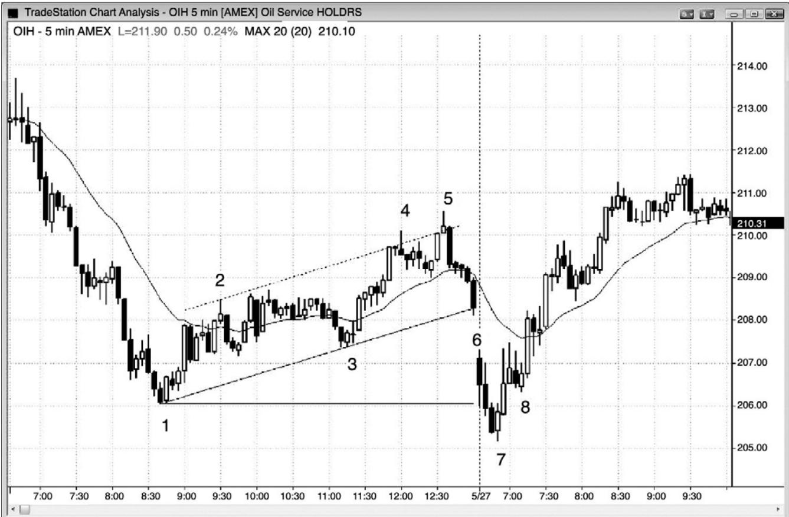
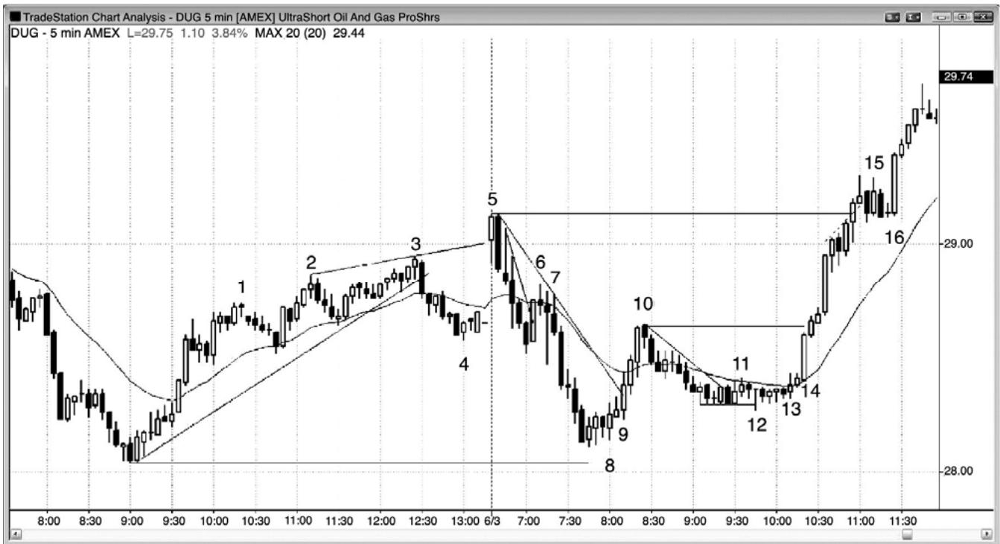
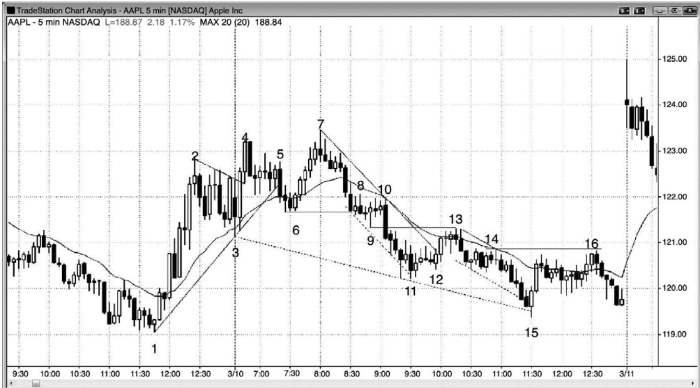
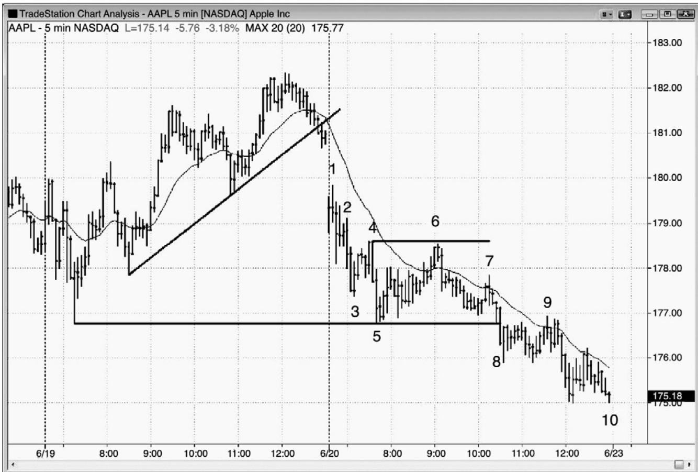
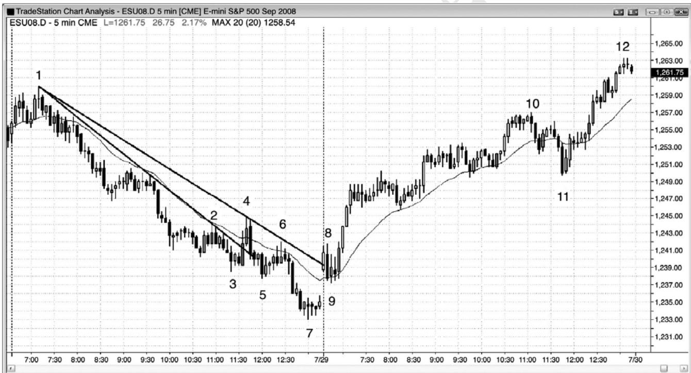
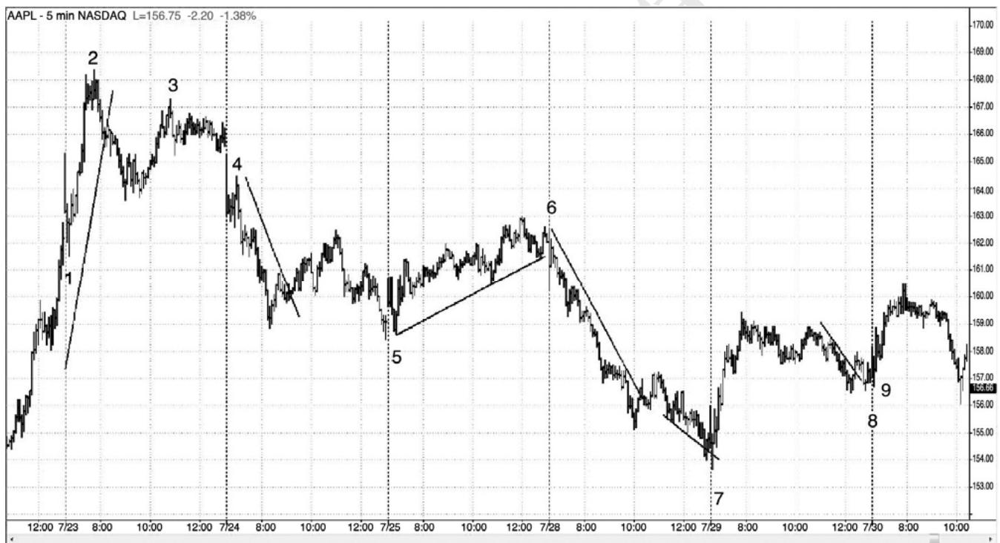

第18章 与昨天相关的形态：突破、突破回撤和失败的突破¶
第 18 章 与昨天相关的形态：突破、突破回撤和失败的突破
第一小时内的很多交易都与前一天的形态相关，所以在市场开盘前要尽可能去预期会出现什么样的架构。观察昨天最后一两个小时的价格行为，看是否是一轮强趋势（总在场内方向可能延续到今天）、一段交易区间、一条通道、或者其他任何可能引起今天开盘突破的形态。虽然有些交易日开盘是在前一天最后一两个小时形成的平静的交易区间内，而且均线水平，但是大部分交易日的开盘都是某种类型的突破。当你不确定是什么突破时，就看一下均线，用均线作为代表。如果第一棒完全位于均线上方，那么就认为开盘是向上跳空。如果第一棒完全位于均线下方，那么就假定市场是向下跳空。通常，在昨天最后一棒收盘和今天第一棒开盘之间会形成一个缺口，那就是一种突破。寻找对任何东西的突破，包括昨天收盘前的通道或旗形。它可能是单棒最终旗形，也可能是持续 3 个小时的通道。寻找对任意波段高点或低点的向下突破，尤其是对昨日高点或低点的向下突破。
一旦你在今天开盘看到一个突破，那么你就必须去研判它有多大可能出现坚持到底。如果出现一个大的下跌缺口，而且第一棒是一条强空头趋势棒，其开盘价靠近最高价，收盘价靠近最低价，那么今天可能形成一轮开盘起空头趋势。反之，如果第一棒是一条强多头反转棒，那么突破可能失败，当天可能形成一轮开盘起多头趋势。如果那一空头突破在几棒的坚持到底之后又出现强多头反转，那么这可能形成一个失败的突破和当天一个可能的低点。如果反弹只持续了一两棒，然后便出现另一条强空头趋势棒，那么失败的突破可能正在失败。如果那样的话，那么在那条空头棒下方做空便是一个突破回撤入场。市场突破，然后失败，但是失败转变为空头趋势方向上的回撤，而不是反转。
反过来当开盘出现多头突破时也是正确的。寻找坚持到底或形成失败突破做空入场的反转。向下反转会以两三条或更多条大型空头趋势棒继续，使得当天很可能成为一个空头趋势日吗？或者，一两棒内出现一条多头反转棒，结果使失败的突破失败吗？如果那样的话，该形态就是正在演变为一个突破回撤买进架构。你需要以这种方式去评估每一个开盘。寻找突破，然后寻找可能成为失败突破架构的反转。最后，如果出现一个失败的突破，那么就准备好看它出现坚持到底还是失败。如果它正在失败，那么就是在形成一个突破回撤交易机会，突破正在恢复。
图18.1 多头通道是空头旗形

P198
昨天的多头通道是空头旗形，市场常常在开盘时向下突破（见图 18.1）。昨天，Oil ServiceHOLDRS（OIH）5 分钟图形成一波近 4 小时的两条腿反弹，在截止棒 1 的强势下跌之后，突破了主要空头趋势线（未画出），那一波反弹在一条空头趋势通道线处两次过冲，两次向下反转（棒4和5）。这就表明多头正在失去控制。反弹的长度是看涨力量的证明。
从棒 5 到收盘的下跌使市场翻转为总在场内空头，交易者们假定这轮趋势会延续到今天开盘。今天，市场向下跳空，形成一条强空头趋势棒，快速跌破昨日低点，形成一个很强的双棒多头反转。这一大型空头旗形失败突破延续了两天，在棒 7 高点上方 1 个跳动处提供了一个极好的做多入场。这是一个从棒 1 开始的空头旗形之后的最终旗形反转，一个更低低点重要趋势反转。反转了前一天高点或低点的开盘反转，常常形成当日高点或低点，因此，交易者们应该把部分或大部分合约波段化。这里，在截止棒 5 上方的一个新波段高点为止的波段上，盈亏平衡止损可能可能允许交易者赚到多达$5.00 的利润。
当开盘形成一个对昨天收盘形态的突破时，交易者们应该利用失败的突破架构入场，比如棒 7，然后，如果失败的突破失败，成为一个突破回撤，那么就反向入场。这里，随后形成的三棒反弹足够强劲，所以很可能形成第二条上涨腿，因此，交易者们仍然不应在突破回撤做空。由于第二条上涨腿很可能形成，所以最好在棒 8 上方或前面两棒的任一棒低点下方买进。棒 8 是一个突破回撤做多架构的信号棒，出现在向上突破开盘区间的顶部棒 6 之后。
根据失败的双重顶空头旗形（棒 6 是第一个顶部），它也是一个做多架构。
重要的是认识到，尽管市场在昨天棒 5 到收盘快速下跌，但是市场在棒 6 开盘很容易向上跳空。如果向上跳空，那么从棒 5 开始的抛盘将成为一次失败的突破尝试。

P199
无论第一棒有多强，即便昨天收盘有被套的交易者，也总要为突破失败做好准备（见图18.2）。
UltraShort Oil 和 Gas ProShares（DUG）昨天收盘以前形成一条 4 小时长的多头通道，那是一个空头旗形，收盘时向下突破。那条多头通道由一轮尖峰和和通道多头趋势构成，截止棒 4 的抛盘形成一个可能的双重底多头旗形。截止棒 4 的抛盘向下突破了那条多头通道，今天开盘突破了那条通道的顶部。尽管当天第一棒是一条强多头反转棒，可能是一轮开盘起多头趋势的开始，但是随后是一条强空头趋势棒，形成一个双棒反转，一个失败突破做空架构和一个更高高点重要趋势反转。结果是对楔形顶和扩张三角形顶（棒2和3是头两次上推）的失败的向上突破，形成一轮开盘起空头趋势。
昨天的尖峰和通道多头趋势在一条楔形通道内结束，因此很可能出现至少包含两条腿的调整，但是突破至棒 4 后的回撤在棒 5 形成一个更高高点。当出现类似楔形或扩张三角形二次入场的强反转架构时，市场通常至少会调整 10 棒和两条腿，比如此处。市场下跌，形成一波近似的测量运动，测试昨日低点时略高于昨日低点。低点处的两个多头实体是买压的征兆，有些多头在棒 8 向上超越那些多头棒时使用止损入场。其他交易者在外包上涨棒棒 8 上方入场。市场正试图与昨日低点形成一个双重底，如果它向上突破棒 5 高点，那么可能在接下来的两天里继续走高，形成一波向上的测量运动。
棒 9 是一条外包上涨突破棒，它将市场翻转为总在场内多头。它使得交易者们认为市场现在不是处于形成空头旗形的过程中，更有可能形成当日低点。
截止棒 10 的反弹是一个三棒多头尖峰，尾线短小，多头实体较长，因此很可能形成第二条上涨腿。回撤很可能不会跌破棒 9 低点，在那里，大部分交易者变得相信市场已经翻转进入多头状态。
截止棒 3 的上涨非常强，包含很多多头趋势棒，尽管它以一个楔形结束，但是这种强势使得调整之后很可能出现第二波上涨尝试。它或许是某张更高时间框架图表上的一个多头尖峰。
在至少出现两条腿调整之前，楔形通常不会失败，因此，当市场向上跳空，形成一条多头趋势棒时，多头变得非常兴奋。然而，就在下一棒，他们被止损踢出，聪明的交易者们把这看作一个连续的反向失败，于是做空。
棒 6 是陡峭的空头趋势中的一个失败的趋势线突破，所以它是一个微型趋势线低点 1 做空架构。这是可能的新空头波段中的一个强空头尖峰中的一个低点 1 做空架构，所以是一个合理的交易机会。
棒 7 形成一个空头低点 2 做空架构，与棒 6 形成一个小型双重顶。
棒 8 是截止棒 3 的强上涨运动之后价格行为交易者们正在寻找的深幅调整。它也是当天的两条腿下跌，是对昨日低点的测试。有些交易者把截止棒 8 的下跌运动看作一波两条腿调整，其中第一条腿结束于棒4，然后回撤至一个更高高点。
由于它是一个失败的低点 2，所以棒 9 是另一个买进机会，通常至少再引出两条上涨腿。这是一笔很棒的交易，因为它把多头套出一波强上涨运动，然后他们不得不追着市场上涨。在强趋势起点处，类似这样的外包上涨失败的低点 1 或低点 2 是很常见的，表明趋势很可能继续大幅前进。
P200
棒 10 是一条强上涨腿，突破了趋势线，向上突破了均线，而且包含很多多头趋势棒，所以接下来很可能形成一个更高低点。棒10也是一条均线缺口棒，但是此处你正准备在回撤买进，只会在很棒的架构做空，而且只会做刮头皮。从棒 9 开始，趋势是上升的，直到出现反向证据。
棒11是对一条空头微型通道的失败突破，棒12成为一个更低低点突破回撤买进架构。
在向棒 13 运动途中，市场形成两条小型空头趋势棒，这实际上是棒 12 向上反转之后的一波两条腿调整。你可能会在棒 13、第二条空头趋势棒上方、或者在棒 14、在作为突破回撤的内包棒之后买进。这是一个更高低点重要趋势反转。
当市场向上突破棒 10 时，没有回撤，表明多头很强。你可能会在 1 分钟图上找一个高点2做多，或者等待5分钟暂停或回撤。
棒15不是一个好的高点1做多架构，因为上涨运动不再是一个强多头尖峰。它出现在从一条小型趋势通道过冲（虚线）向下反转的小型尖峰和高潮多头运动之后，很可能出现至少包含两条腿的的横向至下跌调整。另外，信号棒是一条强空头趋势棒，那是更多双向交易的征兆。双向交易的第一个征兆是四棒之前开始出现的空头趋势棒，棒 15 前面的五棒有些重叠，而且有着突出的尾线。
棒 16 是一个高点 2 做多架构，向上突破小型内包棒，允许使用紧凑的止损。

如图 18.3 所示，第一小时内，市场常常形成双重顶或双重底，成为当日或至少接下来几小时内的极点。AAPL 昨天以一段紧凑交易区间收盘，那可能是一个最终旗形架构。在今天第一棒棒 3，AAPL 快速向下突破昨天收盘多头旗形，然后突破顶部，形成一个小型楔形多头旗形突破。然后，这一突破也失败了，在下一棒向下回转。虽然棒 4 处的这个双棒反转是一个体面的最终旗形做空入场，但是上行动能很强，原来向下突破失败意味着最好在做空前等待更多价格行为。在这一点，失败的向下突破和昨日高点反转之后的一个失败的旗形突破，使得空头趋势更有可能形成。
棒5出现在一个带刺铁丝形态的终点，诱使多头在高点2买进，高点2信号棒（前一棒）低点下方 1 个跳动处是一个很棒的做空入场。这一棒诱使多头做多，然后迫使他们离场。市场可能在均线处以及棒 2 和棒 3 之间的多头旗形内找到支撑，因此交易者们对于自己的空头头寸非常谨慎。棒线重叠的任意区域，特别是当棒线较长，而且紧凑交易区间包含多次反转时，都是强双向交易区域。多头将在下方做空，而不是在上方买进，空头将在上方而不是在下方做空。结果使得突破倾向于向区间内回撤，比如棒 3、9 和 11 处的空头突破，以及棒 4和 7 处的多头突破之后。
棒 6 是向多头反转的一个信号，因为它是一个失败的突破、是多头趋势中向均线下跌的第二条下跌腿（大部分棒线都位于上升均线的上方）、是一个双棒反转，也是向均线回撤的一条多头棒。
注意，截止棒 6 的抛盘突破一条趋势线，表明空头愿意变得积极，所以交易者们预期对多头趋势顶部棒4的测试失败。
P201
棒 7 是一条反转棒，在突破至新高时失败。它是第二次尝试向上突破昨日高点时失败（棒4 是第一次），它形成一个楔形顶和一个更高高点重要趋势反转。由于当日区间到目前为止只有大约近日平均区间的一半，很可能向某个方向突破，使区间加倍，而且很可能至少形成两条腿（趋势型交易者或许会自信地在任意回撤后至少做出第二次下推）。棒 7 是第二次尝试向上突破昨日高点而失败，当市场尝试做两件事情而失败时，它通常会试着向反方向运动。棒7 双重顶（多头趋势中的第三次上推）是当日顶部。
当两条强空头趋势棒向下突破棒 7 后面的四棒多头旗形时，很多交易者会认为市场已经变为总在场内空头。有些交易者会希望出现更多证据。
棒 9 向下突破棒 6 波段低点，但并不是当日低点。由于区间仍然较小，而且市场已经两次尝试向上突破昨日高点而失败，所以至少再出现一次下推测试当日低点的几率非常高，当日低点是一个磁力位，已经非常接近。市场现在处于它的磁场范围内。
棒 10 完成一个带刺铁丝形态，但是，由于每个人都自信地认为市场将形成第二条下跌腿，测试当日新低，所以它在小型内包棒下方提供了一个极好的低点 2 做空架构。它也是棒 6 被向下突破后的一个突破回撤入场。最后，由于它是这样大的一条突破棒，而且收盘于最低价，所以希望看到更多证据证明市场现在为总在场内空头的交易者们的条件得到满足。对于市场走低，人们非常自信，市场或许会向下形成一波近似的测量运动。
截止棒 10 的带刺铁丝回撤突破了一条微型空头趋势线（未给出），所以它可能是结束第一条下跌腿的调整，但是下行动能一直非常强劲，所以多头仍然没有足够的信心积极买进。他们需要更多的价格行为。
截止当日新低棒 11 的突破基本上是垂直下跌，所以很可能不是那一波运动的终点（交易者们将寻找第二条下跌腿，至少测试棒 11 低点）。由于它是对一条空头趋势通道线（从棒 8前一棒开始绘制的那一条线）的失败的突破，所以很可能首先形成两条上涨腿。
棒 12 是一个小型双重底回撤做多架构，位于棒 11 双重底之后，但是之前没有合适的趋势线突破或强反转棒，所以它只是一个刮头皮机会。另外，由于很可能形成第二条下跌腿，而且没有证据表明总在场内交易已经向上翻转，所以集中精力再次做空或对空头头寸加仓，要比被 7 条尾线很长的棒线之后的小多头刮头皮机会分神明智得多。
对于空头来说，棒 13 是另一个低点 2 机会，但是向均线的反弹突破了一条不错的空头趋势线。对于多头和空头来说，这是一个信号，表明从新的波段低点开始的下一次向上反转很有可能包含两条上涨腿，前提是反转的强度要足够。那个低点 2 做空是一个二次入场，它在均线处有一条空头信号棒，增加了成功几率。
棒 14 是又一个低点 2 做空架构，出现在一个从棒 13 开始的强度适中的双棒空头尖峰之后。
棒15是在突破至一个新低后形成的双棒向上反转。它有一条强多头反转棒，在过冲两条空头趋势通道线后离开当日新低。它是第二条下跌腿（小型尖峰之后的通道，小型尖峰是第一条下跌腿），形成于截止棒 13 的第一次趋势线突破回撤和对昨日最低高点（译注：据图应为最低低点）棒 1 的突破测试之后。有些交易者把它看作一个双重底买进架构，另外一些交易者把它看作截止棒 7 的强势反弹之后的一个更高低点。它是从当日高点开始的第二条下跌腿，是一个大型楔形多头旗形的底部，其中棒 3 和 11是头两次下推。所有这些都是力量强劲的征兆，增加了反弹将包含两条腿的几率。第二条腿在棒 16 结束，向上突破了第一条腿的高点，然后反转。它未能向上突破棒 14 高点，与棒 14 形成一个双重顶空头旗形。它也是从棒13 开始的空头尖峰之后的抛物线通道的底部。另外一些交易者把棒 8 低点之前的两条空头趋势棒看作更为重要的尖峰，他们认为下跌通道开始于棒 10。有些交易者把棒 10 看作一个尖峰，把从棒13开始的下跌运动看作通道。有些交易者认为棒4后面的空头趋势棒或棒5空头趋势棒是重要的尖峰。他们把棒 7 看作一个更高高点突破回撤。实际上，那些空头趋势棒中的每一条都代表着卖压，卖压正在积聚。一旦卖压达到某个临界点，压倒多头，市场就会下
跌。
顺便提一句，当出现一波以三推结束的强上涨运动，然后是动能较低的抛盘（斜率较小，趋势棒较小，出现更多尾线）时，那么三推高点很可能不久便会被超越，因为这个底部很可能是更高时间框架图表上的一个更高低点。市场在次日开盘实现了它的目标。如果市场继续上涨，那么下一个目标将是从双重底开始的一波向上的测量运动。

P202
如图 18.4 所示，当天第一棒常常是对昨日通道的突破。昨天是一个多头趋势型交易区间日，形成一轮尖峰和通道多头趋势，包含三次上推。市场收盘向下突破通道，但是在今天开盘向下跳空，突破幅度进一步加大。棒 1 是一个突破回撤做空架构，它可能是一轮开盘起空头趋势的起点。
棒 3 试图形成一个失败的突破开盘反转，但是下跌运动陡峭，并且在一条通道之内。这使得在棒 3 买进非常冒险，尽管当天出现了三次小幅下推。当下跌运动处于紧凑通道内时，较为安全的做法是等到出现突破并回撤后买进。
棒 5 是一个更低低点突破回撤，它试图与昨日低点形成一个双重底（几乎在同一价位）。
它引出一波小型的楔形反弹，在棒 6 形成一个双重顶空头旗形。
双重顶空头旗形是开盘初次下跌后的常见架构，特别是在股票中，随后常常是延长的空头趋势，而且常常是趋势型交易区间空头趋势。棒 6 信号棒是一条均线缺口棒。
尽管对昨日低点的突破仍未形成，但是棒 7 是一个突破回撤做空架构。足够接近。它也是一个失败的双重底回撤，一个成功的双重顶回撤架构，一个对从棒 6 开始的微型下降通道的失败的突破。
棒 9 是向下突破昨天和今天低点后的两条腿回撤。
昨天延续了一天的多头趋势实际上只是一个大的空头旗形，今天是那个空头旗形突破后的空头趋势。今天是一个趋势型交易区间空头趋势日，一个开盘起空头趋势日，形成一轮缺口尖峰和通道空头趋势。

P203
空头通道是多头旗形，开盘对它向上突破后，常常出现突破回撤买进信号。如图 18.5 所示，昨天是一个强空头趋势日，但是棒 4 向上突破一条重要的趋势线，表明市场可能在测试棒 3 低点后尝试反转（通常是两条腿下跌）。不过，市场是以两条腿抛盘进入收盘。
棒 8 向上突破了由棒 4 反弹形成的新的、更为水平的重要趋势线，然后在棒 9 形成一波小型的两条腿突破回撤（两条空头趋势棒被一条多头趋势棒分开），刚好回撤至均线。这个突破回撤是一个更高低点重要趋势反转，引出一个开盘起多头趋势日。当开盘5到10棒形成一个横向区间时，很多机构会在区间突破入场，这种突破常常引出一个趋势日。较早入场的风险较低，比如在这个例子中的均线测试棒上方入场。
棒 10 是第三次上推（三段趋势型交易区间），所以预期出现两条腿回撤。危厄，截止棒10的上升通道非常紧凑，所以对该通道的向下突破和两条腿抛盘之后很可能是对高点的测试。
棒 11 测试前一交易区间的低点，是太平洋标准时间上午 11:45 的一波迅猛下跌，将多头套出场外。它形成一个缺口棒做多架构，也是一个高点 2，这条最后的多头腿向上突破了第三段交易区间的顶部，截止收盘，几乎向上延伸了一波测量运动（是棒 10 到棒 11 抛盘幅度的两倍）。
这是一轮尖峰和通道多头趋势，随后是一个双重底多头旗形（由棒11和两小时前的交易区间的底部构成），形成一个开盘起多头趋势日。

P204
前一天的形态几乎总是会影响开盘第一小时的走势。看一下图 18.6，不要担心这张图中的棒线都很短小，而是把精力集中在概念上。
棒 1 是测试昨日强势收盘的一波迅猛回撤，它迅速向上反转，在棒 1 回撤的高点上方 1个跳动处形成一个买进入场，又在那天第一棒的高点上方形成一个买进入场。
棒4是突破回撤做空架构。棒3更低高点、重要走势反转之后，开盘形成一个更低低点，棒 4 形成一个低点 2 做空架构。
昨天空头趋势线突破之后形成一个空头低点，该低点被更低低点重要趋势反转所测试，然后棒 5 形成开盘反转。今天开盘上涨，然后下跌，测试那个更低低点。棒 5 上方的突破回撤入场实际上是一个高点 2，因为棒 5 是第二条下跌腿（昨天的收盘是第一条），与昨天最后一棒和那天早些时候形成的低点构成一个小型双重底。
小型棒 6 更低高点和接下来的趋势线突破产生一个突破回撤做空架构。那天第一棒测试趋势线下方，然后向上反转，但是上涨运动在棒 6 失败。
棒 7 是一个楔形做多架构（对空头趋势通道线和昨日低点的失败的向下突破），而且之前市场突破了一条重要的空头趋势线。它是向下突破小型趋势通道线后的向上反转。
棒 8 是向上突破进入昨日收盘的趋势线后的突破回撤。那条空头通道是一个空头旗形，所以棒 8 是一个突破回撤做多架构。它也是昨天开盘强势反弹后的一波大型的两条腿回撤。棒8突破回撤更高低点之后，最容易的入场是棒9处的高点2。
P205